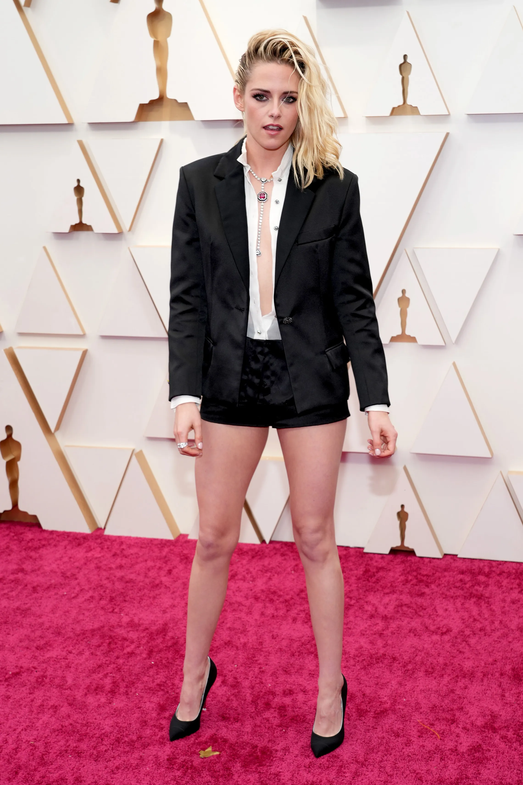
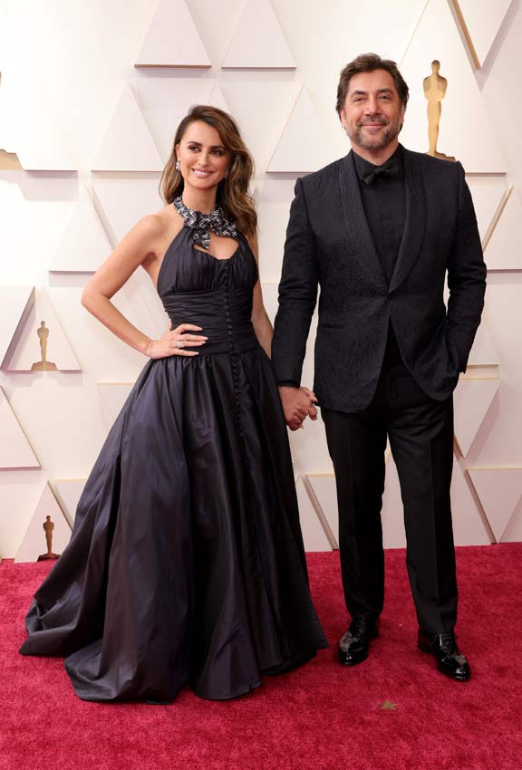

Como cada año, siempre hay muchos temas a comentar despúes de la gran gala, pero este año, más que nunca. A continuación se encuentran las polémicas más destacables de los Oscars
La polémica que más destacó durante la noche fue entre Will Smith y Chris Rock. El presentador, que en aquel momento hacía un monólogo, hizo una broma de mal gusto hacia la mujer de Smith. Jada Pinket. Lo que sorprendió de aquella situación no fue el comentario, sino la reacción del gran actor, que subió al escenariop y le dió un bofetón.
La famosa actriz rompió con el código de vestimenta requerido en esta famosa gala usando un pantalon corto combinándolo con una americana y unos tacones negros. Este look fue muy juzgado por los modiastas de más alta categoria.
Actores como Penélope Cruz o Javier Bardem se quejaron a causa de la poca representación que había del cine español, ya que como actores principàles solo estuvieron ellos dos.
